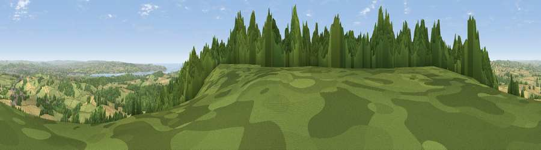

Viewpoint near Kenn
#970 in England · top 1% of its area beats it · near KennThe view, rendered

A 360° render of this exact spot computed from the terrain model, tree cover and land cover — summer colours, afternoon light, calibrated against photographs of famous viewpoints. Real trees, hedges and buildings will differ in detail.
The panorama
Grey silhouette: terrain skyline in each direction (720 bearings, Earth curvature and refraction included). Dashed green: skyline with trees (+15 m) and buildings (+8 m) as obstacles. Blue strip: how far the ground is visible on each bearing.
Where the view opens
Wedge length = distance to the farthest visible ground on that bearing (vegetation-aware). Rings at 10, 25 and 50 km.
What fills the view
48% woodland · 34% grassland · 14% cropland · 2% built-up · 2% water
Angular shares of the visible panorama (visual magnitude), not map area. Landscape diversity 0.50 (0–1 Shannon).
Key numbers
More beautiful places nearby
The staircase of upgrades: each row has a higher view potential than everything closer. Driving times are estimates from straight-line distance, calibrated against real road routing — check an actual route before setting out.
| Place | Direction | Drive | Score |
|---|---|---|---|
| Viewpoint near Kenton | SSE · 3 km | ~7 min | 80.7 |
| Viewpoint near Kenton | SSE · 3 km | ~8 min | 82.9 |
| Viewpoint near Holcombe | SSE · 9 km | ~18 min | 83.3 |
| Viewpoint near Shaldon | S · 13 km | ~24 min | 83.8 |
| Viewpoint near Stokeinteignhead | S · 14 km | ~26 min | 84.1 |
| High Peak | E · 19 km | ~33 min | 85.3 |
| Golden Cap | E · 50 km | ~71 min | 88.7 |
| The Knoll | E · 62 km | ~85 min | 91.0 |
50.64389, -3.54261 · source: screening · position refined by local search. Computed location — check access rights before visiting.